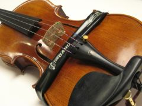
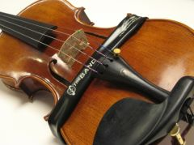

A pickup is a small tool that attaches to the bridge area of your violin. It actually operates on the same premise that your violin does. ... Pickups (aka transducers) capture the vibrations made by your strings and convert it into a signal that can be amplified or recorded
A piezo pickup is very different. ... The reason is simple: piezo pickups work by picking up the actual vibrations of the string and the instrument. That's why they've typically been used as pickups for acoustic instruments, like nylon-string guitars that wouldn't work with a magnetic pickup.
 
